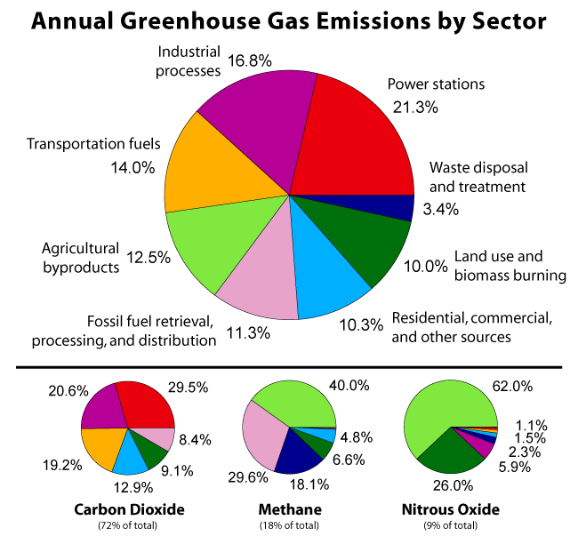
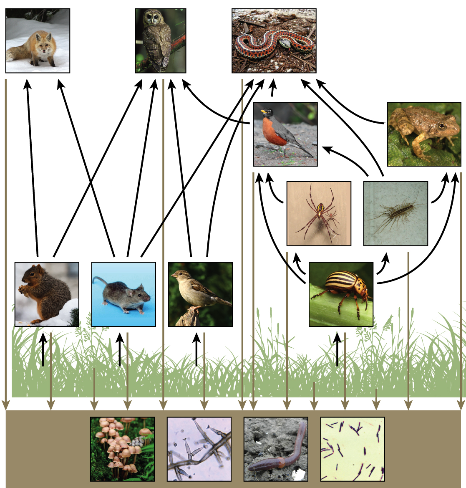
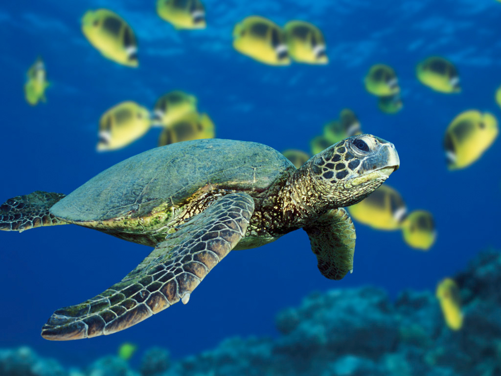

Climate Change and it's Effects on Organisms
Climate change is occurring throughout the world and it is an issue that we humans know would cause environmental changes to the Earth. However, what many do not consider is the effect that small changes in temperature would leave towards animals due to one part of their cycle and environment has been changed.
Climate Change and Global Warming
The videos above describe information about both climate change and global warming. Global warming causes climate change, global warming is used to describe the increase in the Earth's average temperature. Climate change doesn't only refer to global changes in temperature, but also to changes in wind, precipitation, the length of seasons as well as the strength and frequency of extreme weather events such as tornadoes or hurricanes. So this means that climate change and global warming are tied together, now the main focus of this page is to talk about the human additions of greenhouse gases and other contributions towards the Earth that begin to damage living of organisms.
History of Climate

The history of climate is found in many ways, one being the buildup of ice cores that contain air sacs that can tell us a lot about the history of the Earth. (Concentration of gases, ashes and dust, radioactive substances, and more) A lot more sources can also be used such as the growing of trees to find the precipitation levels and many more methods. Ice cores being the most effective, the information has led to scientists being able to find it significantly changed over the past 50 years after the start of the industrial age. Carbon dioxide is not the only increasing gas in the atmosphere but also the increase of all the greenhouse gases such as Methane, Nitrous Oxide, Water Vapour, and others. (The graphs for the following can be viewed here) If you click on the photo to the right you'll be taken to a page with the temperature of the Earth with the information we have been able to gather. Many have noticed a pattern of the graph how the temperature of the Earth increases and decreases throughout the years, however, it's the rate at which the temperature is increasing which has caused a concern for the future. There has been a one-degree Celsius increase of the temperature throughout the Earth and a two-degree increase in the north. Small changes to the Earth's temperature cause damage towards ecosystems which will be shown in the biology section.
Greenhouse Effect
The image on the left shows the greenhouse effect in action. It is shown that the radiation (high-energy) is sent to the Earth having most of it go into the surface and some reflected off. The Earth takes that high-energy radiation and emits it off as a low-energy radiation (Infrared). This energy can be absorbed by greenhouse gases do to the way they vibrate allowing them to absorb the radiation, and they some of the energy back at the Earth heating up the Earth's surface.
Human Activity
The main impact of humans from human activity on global warming would be from the greenhouse gases that we emit into the atmosphere. With all the advances in technology, humans have become more spread to the natural resources around them and are finding more ways to use them for their benefit. While much of the effects end up being negative on the environment around us. As seen on the chart on the right it breaks down many of the common greenhouse gases and where most of them originate from. (Known as anthropogenic greenhouse gases) [You can click on the image to enlarge it]
The Food Chain and Ecosystems
Animals require food to survive. There are consumers that get organic molecules by eating other organisms, and there are producers who make their own organic molecules. The food chain is simply a sequence of how nutrients and energy are passed on as one organism eats another. In the food chain each organism occupies a different trophic level, this defines how many energy transfers separate it from the basic input of the chain. Food webs are just webs of food chains to show how the food chains have relationships with each other, so the effects if one part of the food chain being massed up is huge. Ecosystems provide places for the organisms to live in and share connections with each other. (Many ecosystems are being destroyed due to human activity) [You can click on the image to enlarge it]
Effects of Climate Change on Water
Water has a major role in the greenhouse effect due to it absorbing a lot of the sun's radiation. When there is a higher CO2, more of that carbon is absorbed by the water making the water more acidic. Changes, even small changes in the acidity of water doesn't work with many organisms that live in the water. This causes them to die out or move (if possible) and hits really hard in the food chain for all the animals and their populations. Not only the acidity but larger floods of water increase the erosion levels, these reduce the quality of the water where the organisms would live in. The carbon is not always what causes the acidity either, rain also becomes acidic due to the increase of greenhouse gases, and there get right into lakes and oceans, changing the acidity of the water. Also with the increase of heat in the globe, there are much more droughts occurring. This causes stress and kills plants which wildlife depends on for food and shelter, also removes their sources of water.
Changes in Ecosystems
As shown in the past points, global warming causes droughts for many places. Droughts are estimated to cause 90% of wetlands to dry out, this removes the breeding habitat for ducks, geese, and other migratory species. The sea level and salts in the water could decimate mangrove forests, which would leave many fix, shellfish, and other wildlife without a place to feed, breed, or to raise their young. The food availability in many places would also be affected, for migratory species, birds that arrive on schedules would fine their sources of food (insects, seeds, etc) have hatched or bloomed too early, or didn't at all. Milder winters also cause food caches to spoil, so wildlife that depend on food stores to survive are going to have trouble.
That's climate change for you! The Earth's climate has always changed, we're currently at the peak of temperatures. Based on the patterns of the temperature in the past the temperature should begin to drop in the next few thousand years. However, it's unsure if this will happen with the increase of gases. So who knows?
A website by Makan D